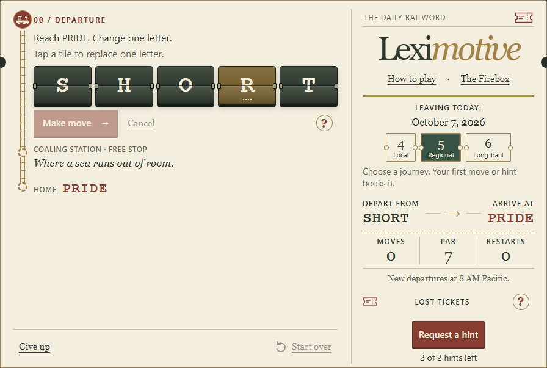
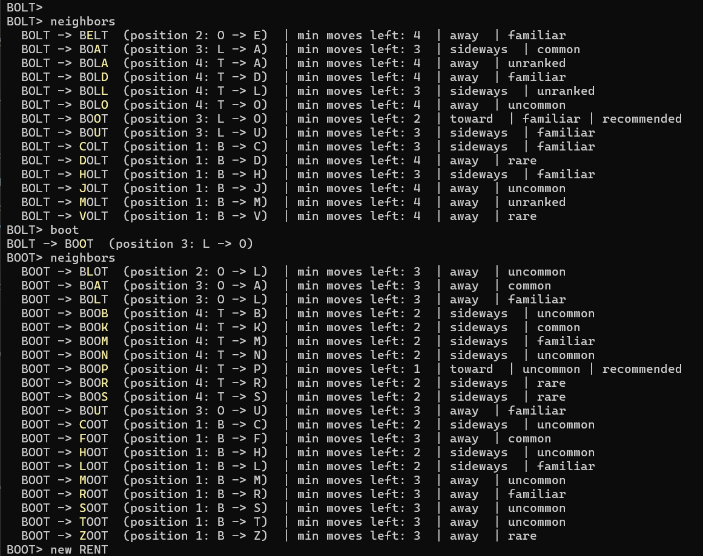

Leximotive / The Daily Railword
A word challenge.
A game of its own.
This started with a puzzle I was playing: change one word into another, one letter at a time, making a real word at every step.
I wanted to understand the possible routes, not just look up an answer. I started with a small Python tool in the terminal, then built Leximotive as a daily word game for the browser.


First, I just wanted to solve it.
The challenge is finding a sequence of allowed words that reaches the finish in as few changes as possible.
A word that looks closer to the finish can still lead to a dead end. Sometimes you have to go sideways, or change a letter that already matches, to find a way through.
I wrote a Python program to explore those choices. It could list the next possible words, show exactly which letter changed, and find the fewest moves to the finish. I also wanted clues, so I could get a little help without revealing the whole answer.


Simple wordplay with richer gaming.
I built the route-finding before the interface. It established which words could connect and how to calculate a minimum route. The browser game uses the same dictionary for move validation, hints and par.
I used the railway theme to organize the interface. Words appear as stations along a vertical track, and the changed letter flips into place. Keeping that sequence visible lets the player review earlier moves without opening another panel.
Hints give the player a word to work toward without showing every intervening move. Each daily route has two partial-word hints. Local, Regional and Long-haul keep their own progress, so players can try a different word length when they get stuck. Start over clears only the current route; used hints and a claimed station bonus stay used.
The results show accepted changes, the minimum route length, restarts, hints and the Coaling Station credit separately. A player can compare the route they took with a shortest route. There is no leaderboard or overall score.
How does it know the way?
Think of the word list as a map. Two words are connected when you can change one letter to get from one to the other.
To find the fewest moves, the program starts at the destination and works outward: words one move away, then two moves away, and so on. This checks the possible routes instead of guessing that a word which looks closer must be better.
While you play
- Keep the screen moving
- The browser does the route calculations in a separate helper, so that work does not hold up the game's controls.
- Give a useful clue
- The game chooses a shortest route, favouring unvisited stops and familiar words. A ticket reveals most of an unfamiliar stop along that route, not a list of moves.
- Remember the journey
- Each difficulty's progress and used hints stay in your browser. Start over resets only the route you're playing. There is no login or shared player account.
Before you play
- Prepare the daily routes
- A Python tool picks six months of puzzles ahead of time and checks that every route works. The timetable repeats after those six months.
- Use the same word list
- Moves, clues and the minimum move count all use the same word list. A suggested word must be allowed in the game too.
- No game backend needed
- GitHub Pages serves the files. The game itself runs in your browser, including the word checks and route-finding. There is no game server processing your moves.